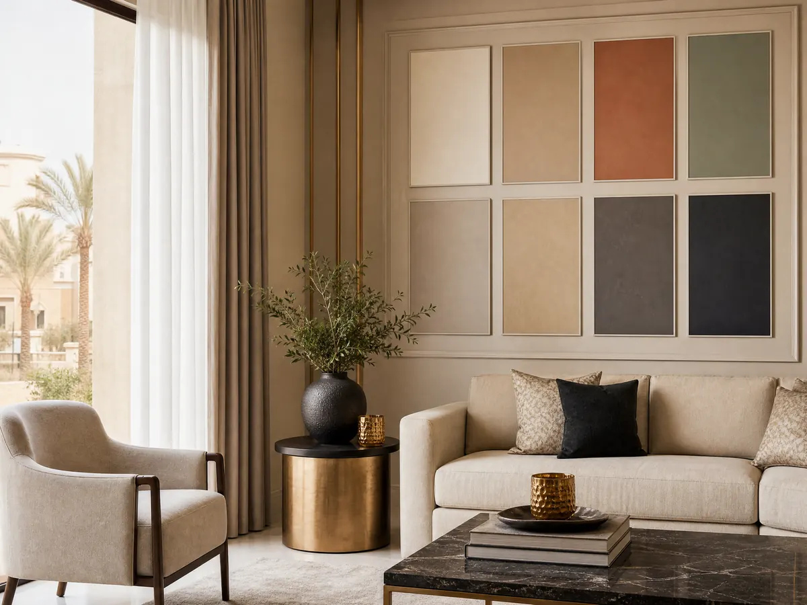

5 نصائح لاختيار معلم دهانات بويا الرياض 053 116 9312
معلم دهانات بويا الرياض هو ما يبحث عنه أصحاب المنازل عند تجديد الشقق والفلل أو تجهيز منزل جديد، لأن جودة الدهان تؤثر في المظهر النهائي للجدران وتناسقها مع الأثاث والإضاءة واختيار الفني المناسب يحتاج إلى معرفة نوع العمل المطلوب وحالة الجدران والخامات التي تناسب المكان.
وقبل الاتفاق على التنفيذ، من المهم تحديد الألوان والتشطيبات والميزانية، ومعرفة ما إذا كان المشروع يحتاج إلى دهان فقط أم إلى إضافات ديكورية أيضًا ،وتقدم ديكورات الأحلام خدمات للديكور الداخلي تشمل الجبس بورد وبديل الرخام وورق الجدران والباركيه والتكسيات الخشبية والشيبورد، ويمكنك التواصل مع الشركة للاستفسار عن الخدمات المناسبة لمشروعك والتأكد من توفر أعمال الدهانات المطلوبة.
معلم دهانات بويا الرياض
اختيار معلم دهانات بويا الرياض لا يعتمد على السعر وحده، بل على قدرته على فهم المطلوب وتجهيز السطح واستخدام الخامة المناسبة لطبيعة المكان، وقبل بدء العمل وضح تفاصيل المشروع حتى تتجنب اختلاف التوقعات بشأن النتيجة النهائية:
- تحديد نوع الدهان: هل تحتاج إلى تجديد الجدران الداخلية أم دهان الواجهات الخارجية أم طلاء الأبواب والأسقف.
- فحص الجدران: التأكد من وجود شروخ أو تقشر أو آثار رطوبة قد تحتاج إلى معالجة قبل الدهان.
- اختيار اللون: مراعاة مساحة الغرفة والإضاءة وألوان الأرضيات والأثاث عند تحديد الدرجة المناسبة.
- معرفة الخامات: اسأل عن نوع البوية ومدى ملاءمتها للسطح والاستخدام المطلوب.
- الاتفاق على التفاصيل: حدد عدد الطبقات والأعمال التحضيرية والمواد التي يشملها عرض السعر.
أفضل معلم دهانات الرياض
عند مقارنة معلم دهانات بويا الرياض بغيره ركز على تفاصيل العمل وطريقة تجهيز الجدران ومدى وضوح العرض المقدم لك، بدلا من الاعتماد على وصف مثل الأفضل أو الأرخص فقط فهذه المعايير تساعدك على اختيار الخدمة الأقرب إلى احتياجات منزلك:
- تجهيز السطح: إزالة الأجزاء المتقشرة ومعالجة العيوب الظاهرة قبل تطبيق الدهان بحسب حالة الجدار.
- توحيد التشطيب: التأكد من ملاءمة طريقة التطبيق للحصول على مظهر متناسق وتقليل اختلافات اللون والملمس.
- اختيار البوية المناسبة: تحديد المنتج بناء على نوع السطح ومكان الاستخدام ومتطلبات التنظيف والصيانة.
- حماية المكان: الاتفاق على طريقة تغطية الأرضيات والأثاث وتقليل آثار الدهان أثناء التنفيذ.
- مراجعة العمل النهائي: فحص الزوايا والحواف وتغطية الجدران والتأكد من استكمال البنود المتفق عليها.
اقرأ أيضًا: معلم دهانات شمال الرياض: خبرة في أرقى الديكورات
تجهيز الجدران قبل دهان البوية
التحضير الجيد خطوة أساسية للحصول على تشطيب مناسب، لأن تطبيق طبقة جديدة فوق سطح متضرر قد يؤدي إلى ظهور عيوب بعد فترة ،ويختلف التجهيز حسب حالة الجدار ونوع الطلاء القديم وطبيعة الخامة المستخدمة، وتشمل أهم النقاط ما يلي:
- تنظيف الجدران: إزالة الأتربة والمواد التي قد تؤثر في التصاق الدهان.
- معالجة الشروخ: تحديد الشروخ والفراغات الظاهرة واختيار المعالجة المناسبة قبل الطلاء.
- فحص الرطوبة: التأكد من معالجة مصدر الرطوبة إن وجد، بدلا من تغطيته بطبقة دهان جديدة.
- تجهيز السطح: استخدام المعجون أو البرايمر عند الحاجة ووفقا لنوع الطلاء وحالة الجدار.
- اختبار اللون: تجربة عينة صغيرة عند الحاجة لمراجعة الدرجة تحت الإضاءة الموجودة في الغرفة.
ومن المفيد تحديد أعمال التجهيز ضمن الاتفاق قبل التنفيذ، حتى تكون التكلفة واضحة ولا تظهر إضافات غير متوقعة أثناء العمل، وإذا كنت تريد إضافة عناصر ديكورية إلى الجدران، فتقدم ديكورات الأحلام خيارات مثل ورق الجدران وبديل الرخام والتكسيات الخشبية التي يمكن الاستفسار عنها عبر الموقع الرسمي.
معلم بويه باكستاني الرياض
قد يستخدم بعض العملاء عبارة معلم دهانات بويا الرياض باكستاني عند البحث عن فني دهانات، لكن الجنسية وحدها لا تحدد جودة العمل أو مدى ملاءمة الفني للمشروع والأهم هو التأكد من المهارة والخبرة في نوع التشطيب المطلوب ووضوح الاتفاق قبل التنفيذ:
- راجع خبرة الفني: اسأل عن الأعمال المشابهة لنوع الدهان الذي تحتاج إليه.
- حدد نطاق العمل: وضح ما إذا كانت المهمة تشمل التجهيز والمعجون والدهان أم تقتصر على مرحلة محددة.
- ناقش نوع البوية: اتفق على الخامة المناسبة للجدران أو الأسقف أو الأبواب بحسب الاستخدام.
- اطلب عرضا واضحا: تأكد من معرفة تكلفة المواد والعمالة والأعمال الإضافية إن وجدت.
- تحقق من توفر الخدمة: إذا كنت تتعامل مع شركة ديكور، اسألها مباشرة عن توفر أعمال الدهانات والفنيين المتخصصين فيها.
شاهد أيضًا: بديل الشيبورد الرياض: الحل الأمثل والأكثر متانة
كيف تختار ألوان البوية المناسبة لمنزلك؟
لون الجدار يؤثر في شكل الغرفة وإحساسك بمساحتها، لذلك من الأفضل اختيار أفضل معلم دهانات بويا الرياض والألوان بعد مراجعة الإضاءة والأثاث والأرضيات، ويساعد التنسيق المسبق بين الدهانات وعناصر الديكور على تحقيق نتيجة متجانسة بدلا من اختيار كل عنصر بمعزل عن الآخر:
- الغرف الصغيرة: يمكن تجربة الدرجات الفاتحة إذا كنت ترغب في مظهر هادئ ومشرق.
- المجالس: اختر درجات تتناسب مع الأثاث وطبيعة الاستخدام واللمسات الديكورية الموجودة.
- غرف النوم: راع الهدوء البصري وتناسق لون الجدران مع الستائر والمفروشات.
- الجدران المميزة: يمكن تخصيص جدار بلون مختلف أو بخامة ديكورية مثل ورق الجدران.
- الإضاءة: افحص عينة اللون نهارا وليلا لأن الإضاءة قد تغير مظهر الدرجة.
كم تكلفة دهان الجدران في الرياض؟
تختلف تكلفة الدهانات بحسب مساحة المكان ونوع البوية وحالة الجدران والتجهيزات المطلوبة، لذلك لا يكفي الاعتماد على سعر واحد لجميع المشاريع ولتقييم العرض بصورة أفضل اطلب تفاصيل واضحة عن المواد والأعمال التي تدخل ضمن السعر لدى معلم دهانات بويا الرياض في ديكورات الأحلام:
- المساحة الإجمالية: تؤثر مساحة الجدران والأسقف وعدد الغرف في كمية المواد ووقت التنفيذ.
- نوع البوية: تختلف المنتجات في خصائصها وتشطيبها وتكلفتها بحسب الشركة المصنعة والاستخدام.
- حالة السطح: قد تزيد التكلفة إذا احتاجت الجدران إلى إصلاح الشروخ أو إزالة الدهان القديم أو معالجة الرطوبة.
- طبيعة التصميم: قد تتطلب التشطيبات الخاصة أو المؤثرات الديكورية خطوات وخامات إضافية.
- المواد والعمالة: تحقق مما إذا كان العرض يشمل الخامات والتجهيز والتنفيذ والتنظيف بعد انتهاء العمل.
ولا تعرض ديكورات الأحلام على المعلومات المتاحة سعر ثابت لخدمات الدهانات، لذلك الأفضل التواصل معها لتوضيح احتياجاتك والتحقق من توفر الخدمة المطلوبة قبل طلب عرض السعر، وإذا كان المشروع يشمل الجبس بورد أو ورق الجدران أو بديل الرخام، فحدد هذه الأعمال أيضًا حتى تكون تفاصيل المشروع أكثر وضوحا.
اطلع على: معلم تركيب شيبورد في الرياض: دقة في التنفيذ
الخاتمة
اختيار الفني المختص المناسب يبدأ بتحديد نوع الدهان وحالة الجدران والخامات التي تناسب المكان، ثم الاتفاق على التجهيز والتكلفة والتشطيب النهائي، وإذا كنت تخطط لتجديد متكامل، فإن تنسيق الدهانات مع الجبس بورد وورق الجدران وبديل الرخام والتكسيات الخشبية يساعد على تنظيم شكل المساحة، وتقدم ديكورات الأحلام خدمات متنوعة للديكور الداخلي، ويمكنك التواصل معها على الرقم 0531169312 أو زيارة الموقع الرسمي للاستفسار عن الخدمات المتاحة والتأكد من توفر أعمال الدهانات قبل الاتفاق.
الأسئلة الشائعة
كيف أختار معلم دهانات مناسب في الرياض؟
ابدأ بتحديد الفني المختص والمساحة المطلوب تنفيذها، ثم اسأل عن طريقة تجهيز الجدران ونوع المواد والتكلفة وما يشمله العرض، ومن المهم التأكد من توفر الخبرة المناسبة لنوع التشطيب الذي تحتاج إليه، وعدم الاعتماد على السعر وحده، وإذا كنت تريد الجمع بين الدهانات والديكور، فتحقق من أن الجهة التي تتعامل معها توفر الخدمات المطلوبة أو يمكنها توضيح نطاق عملها بدقة.
هل توفر ديكورات الأحلام خدمات الدهانات والبوية؟
يعرض الموقع الرسمي لديـكورات الأحلام خدمات للديكور الداخلي تشمل الجبس بورد وبديل الرخام وورق الجدران والباركيه والتكسيات الخشبية والشيبورد ولا ينبغي افتراض توفر أعمال الدهانات المستقلة دون تأكيد مباشر، لذلك يمكنك التواصل مع الشركة على الرقم أو زيارة للاستفسار عن الخدمة التي تحتاج إليها ومعرفة تفاصيلها قبل الاتفاق.
ما العوامل التي تؤثر في سعر دهان الشقة؟
يتحدد السعر حسب مساحة الجدران والأسقف ونوع البوية وحالة السطح والأعمال التحضيرية المطلوبة، إضافة إلى عدد الطبقات والتشطيبات الخاصة إن وجدت وقد تختلف التكلفة أيضًا بحسب ما إذا كان العرض يشمل المواد والعمالة معا أو يشمل أحدهما فقط للحصول على تقدير مناسب، لهذا قم بتجهيز تفاصيل المساحة ونوع الدهان المطلوب واطلب عرضا يوضح البنود والتكاليف قبل بدء التنفيذ.
هل تبحث عن تنفيذ احترافي لمشروعك؟
نحن في ديكورات الأحلام نوفر لك أفضل الخامات وأمهر الفنيين في الرياض.
تواصل معنا عبر واتساب